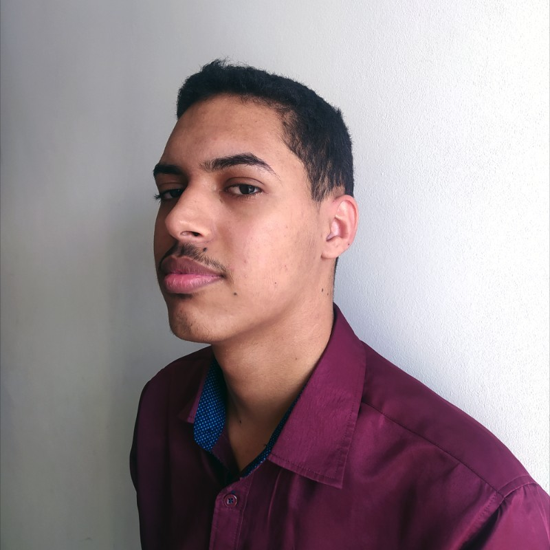
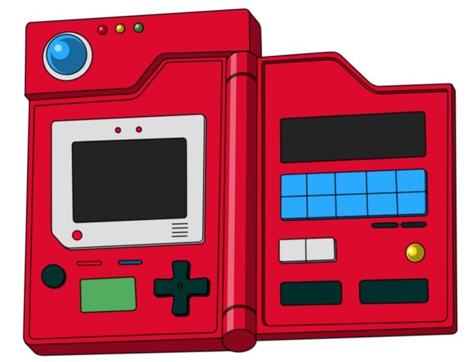
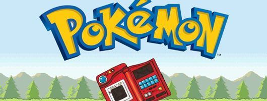
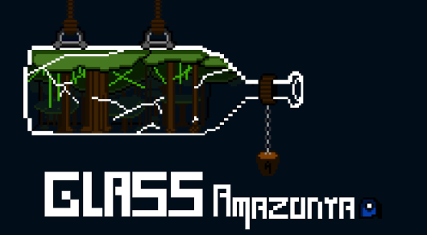

Doppel
Portal de notícias geek e plataforma de RPG de mesa: salas com chat e rolagem de dados, fichas de D&D 5e, ranking e painel administrativo. Nasceu como TCC do curso técnico e hoje está na versão 3.0.
Disponível para novas oportunidades
Desenvolvedor Web Full-Stack
Construo aplicações web completas com JavaScript, C# / .NET e SQL, cuidando de tudo, do banco de dados à interface.

01 · Sobre
Comecei a programar por curiosidade e transformei isso em carreira: me formei Técnico em Informática para Internet pela Etec e depois em Jogos Digitais pela Faculdade Impacta.
Na Sislogica, atuei como programador full-stack. Em seis meses passei a desenvolver projetos para clientes com apoio de um sênior, cuidando das telas, das regras de negócio, das APIs em .NET e do banco de dados. Entre as entregas estão um aplicativo para entregadores e um dashboard comercializado aos clientes da empresa.
Minha experiência com suporte técnico me deu algo que levo para o código: diagnosticar problemas com método, conversar com o usuário e entregar uma solução que funciona de verdade.
Hoje meu foco é desenvolvimento web. Estou me aprofundando em JavaScript moderno, React e no ecossistema de front-end e back-end para criar aplicações escaláveis.
02 · Experiência
NerdHard Tecnologia LTDA
Sislogica LTDA
NerdHard Tecnologia LTDA
03 · Projetos
Portal de notícias geek e plataforma de RPG de mesa: salas com chat e rolagem de dados, fichas de D&D 5e, ranking e painel administrativo. Nasceu como TCC do curso técnico e hoje está na versão 3.0.

Pokédex front-end inspirada na interface de Pokémon Sword & Shield, com JavaScript puro e manipulação do DOM. Começou na Dev Week da Dev em Dobro.

Pokédex que consome a PokéAPI, com front-end em JavaScript e API em PHP (Composer), no estilo de Pokémon Scarlet & Violet.

Jogo 2D ambientado na Amazônia: uma arara-vermelha atravessa 20 fases fugindo de queimadas e coletando frutos da região. Feito na Unity com C#, foi meu TCC da graduação.
Site responsivo e acessível, sem frameworks: ES Modules, IntersectionObserver, tema claro/escuro, filtros e integração com a API do GitHub.
04 · Habilidades
05 · Contato
Estou buscando uma oportunidade como desenvolvedor web. Se você tem uma vaga ou um projeto em mente, me chame. Respondo rápido.